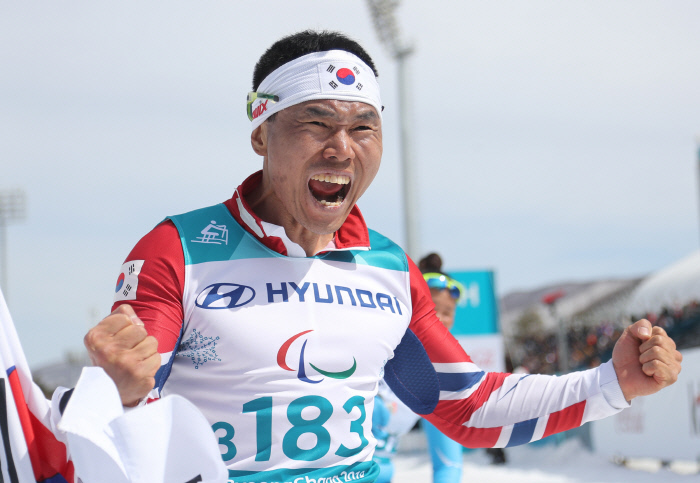

한국 최초로 동계패럴림픽서 금메달 딴 신의현..."방송 중계 시간이 적어 아쉽다"
김은진

지난 17일, 장애인 노르딕스키 국가대표 신의현(37(점)창성건설)이 한국 최초로 겨울패럴림픽에서 금메달을 따냈다. 한국이 1992 알베르빌 겨울패럴림픽부터 겨울 패럴림픽에 출전한 이후 금메달을 딴 것은 이번이 처음이다. 26년 묵은 겨울패럴림픽 금메달의 한을 신의현이 풀어준 것이다.
신의현은 앞선 11일 열린 크로스컨트리스키 남자 15km 좌식 종목에서 42분28초9를 기록해 동메달을 목에 건 바 있다. 그러나 신의현의 동메달 획득 순간은 TV로 볼 수 없었다. 패럴림픽 주관 방송사인 공영 방송사 KBS는 물론이고 지상파인 SBS(점)MBC에서도 중계를 하지 않았기 때문이다. 그 시각에 각 방송사는 예능 프로그램을 방영하고 있었다.
신의현은 메달 시상식 후 취재진과 만나 “내 사연이 소개된 뒤 많은 연락을 받았다”라면서 “다만 패럴림픽에 좀 더 많은 관심을 쏟아주셨으면 좋겠다. 방송 중계도 늘려주셨으면 한다”고 말했다. 그는 이어 “ 예전보다 국민의 관심이 점점 커지고 있지만, 방송 중계시간이 적어 아쉽다”라며 “(중계가 많이 돼) 평창 패럴림픽이 장애인체육에 관한 국민 인식 개선에 전환점이 됐으면 좋겠다”고 덧붙였다.
중계권을 가진 주요 방송사들이 패럴림픽 중계시간을 충분히 편성하지 않으면서 평창패럴림픽은 ‘그들만의 대회’로 전락하고 있다.
지난 8일, 지상파 3사에 따르면 KBS가 두 채널에서 개, 폐회식을 포함해 25시간 패럴림픽을 생중계할 예정이고, 올림픽 주관 방송사인 SBS가 약 30시간을, MBC는 라이브 10시간을 포함해 전체 17시간 55분을 관련 방송에 할애할 예정이라고 밝혔다.
이는 방송사별로 17일동안 150시간 이상, 하루 평균 9시간 넘게 편성했던 동계올림픽에 비해 훨씬 적은 시간이다.
문 대통령은 12일 청와대에서 열린 수석보좌관 회의에서 “우리 방송의 패럴림픽 대회 중계가 외국보다 많이 부족한 실정”이라며 “방송들도 패럴림픽 경기를 더 많이 볼 수 있도록 더 많은 중계방송 시간을 편성해 줄 수 없나 살펴 주길 바란다”고 당부했다.

이러한 소식이 알려지자 국민의 수신료를 받고 있는 KBS가 공영방송의 역할에 충실하지 못하다는 비판이 있었다. 결국 KBS는 1TV, 2TV 포함 종목 생중계에 있어 225분을 추가로 늘리고 하이라이트 또한 180분을 확대하는 등 총 16시간을 추가 편성해 합계 41시간 동안 패럴림픽을 중계하기로 했다.
MBC도 시간 조정에 나섰다. 패럴림피기 있는 열흘 동안 경기 중계 시간을 기존 18시간에서 35시간으로 확대하기로 했다. 여기에 더해 아이스하키, 휠체어 컬링, 알파인 스키 등을 생중계하는 등 주요 종목 경기 실황을 추가로 편성했다.

방송사들이 시청자의 목소리에 응답한 것은 고무적이지만, 자국에서 열리는 대회인 것에 견주면 생색내기용이라는 비판은 여전하다. 특히 해외 방송사와 비교하면 국내 방송사의 패럴림픽 중계 시간은 여전히 부족한 편이다. 미국 NBC는 94시간, 일본 NHK는 62시간, 영국 <채널 4>는 100시간을 편성키로 했다.

평창패럴림픽은 1988년 서울패럴림픽에 이어 30년 만에 한국에서 열리는 패럴림픽이자, 동계패럴림픽으로는 한국에서 처음 열리는 대회다. 한국 대표팀 선수들이 사상 처음으로 전종목에 출전하는 대회이기도 하다.그러나 공영방송 KBS에서조차 패럴림픽 경기를 거의 볼 수 없는 상황이다. KBS는 2016 리우패럴림픽 때도 고작 16시간을 편성했으며, 그마저도 개회식을 뺀 나머지는 모두 녹화중계였다.
경희대 이성학 스포츠경영 대학원 교수는 “수익을 우선시 해야 하는 방송사 입장에서 지금은 시청률이라는지표를 무시할 수 없는 환경이다. 다만 공영방송 등의 존재 이유가 이럴 때 있는 것이다. 전파라는 공공재와 수신료의 가치를 새악해 수익보다 공익을 조금 더 도모해야 한다”며 공영방송의 역할을 강조했다.